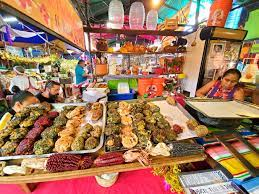

Los mejores lugares de Tepoztlán

"Tubo hotel"
Vive la experiencia de dormir en un tubo de concreto en este hotel con alberca, a un precio accesible desde $400 mx por noche con desayuno incluido
"Casa Calavera"
Si te gusta la música electrónica, este es el lugar indicado, ya que encontrarás dj's en vivo casi todo el día, platillos y gran variedad de bebidas, ademas de una increíble vista al tepozteco, con precios que van desde $150 mx por persona
Mercado de Tepoztlan
Dentro de este mercado encontraras muchas opciones de desayunos, comida y bebidas tradicionales de la region desde $30 mx, algunos de ellos son:
Spa "Senki"
Para terminar y relajarte después de bajar el tepozteco, puedes darte un masaje en el spa Senki, en el que puedes descansar y conectar con tu interior a traves de sus magnificos paquetes de relajación con precios desde $600 por media hora
Otras opciones para hacer en el pueblo son:
Encuesta
¿Te gustaria visitar Tepoztlan?
¿Que nieve elegirias?